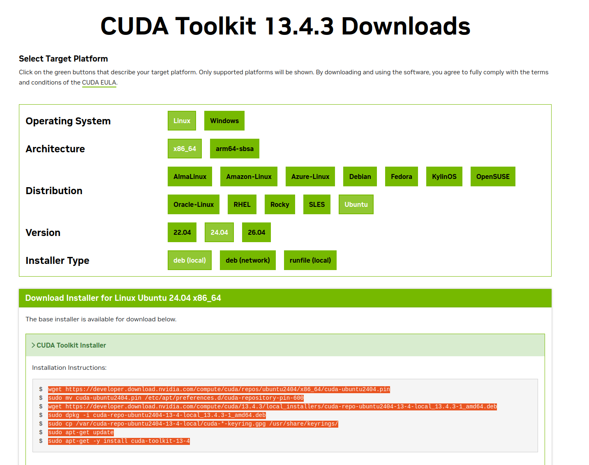
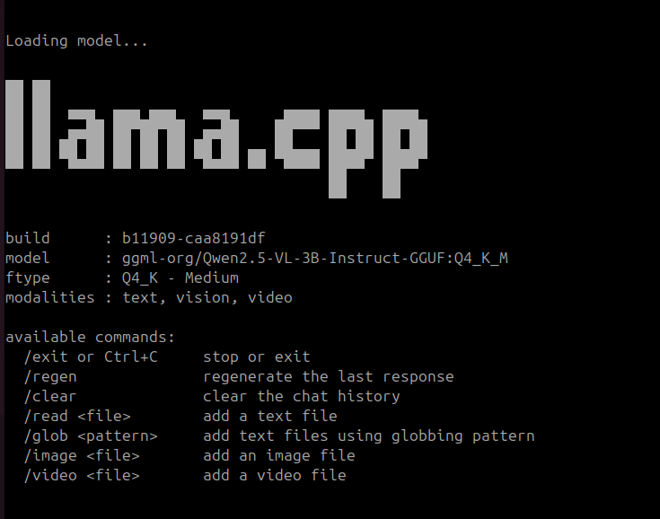
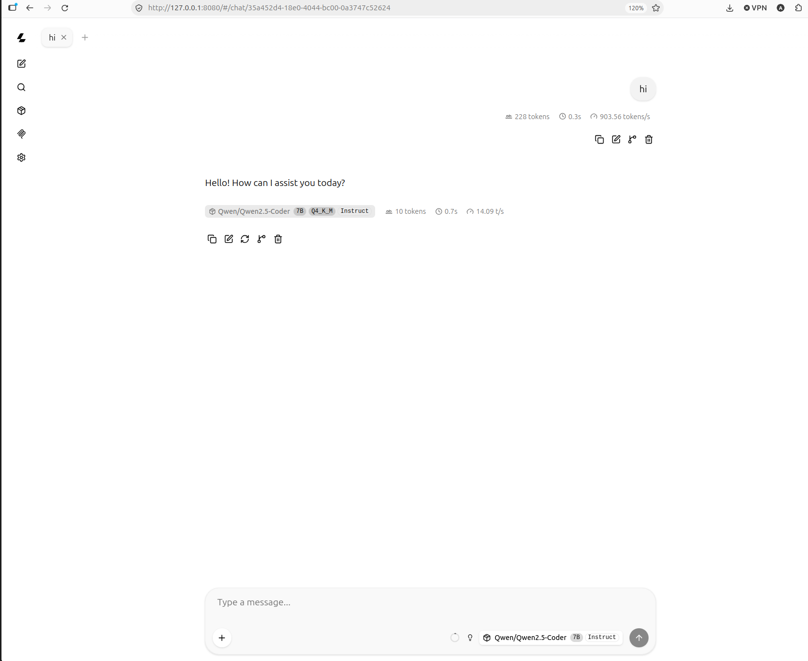
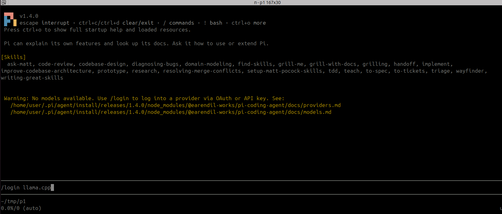
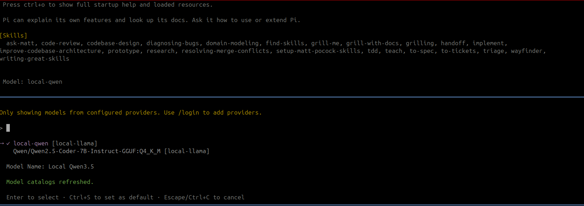

llma.cpp
llama.cpp is a lightweight C/C++ runtime for running large language models locally. It uses efficient model formats and quantization to make inference practical on CPUs and optionally GPUs, without requiring a cloud service.
Install
CUDA support
install latest cuda toolkit

Update path for current nvcc
Build llma.cpp
Models
Download GGUF models from ggml-org on Hugging Face, such as Qwen2.5-VL-3B-Instruct-GGUF. The llama.cpp model guide explains downloading models with -hf.
Info
The models locate in ~/.cache/huggingface/hub
Model files usually use the .gguf format, which packages the model weights, tokenizer, and metadata for llama.cpp. A typical name is Qwen2.5-VL-3B-Instruct-Q4_K_M.gguf: model family, model size, tuned variant, then quantization.
Q4_K_M is a 4-bit K-quant model in the medium-quality variant. It is a practical balance of file size, memory use, speed, and output quality; lower-bit variants use less memory, while higher-bit variants generally preserve more quality.
| Example filename | Quantization | Typical trade-off |
|---|---|---|
Model-Q2_K.gguf |
2-bit K-quant | Smallest memory use, with a noticeable quality loss |
Model-Q4_K_M.gguf |
4-bit K-quant, medium variant | A common balance of quality and memory use |
Model-Q6_K.gguf |
6-bit K-quant | More memory use, with quality closer to the original model |
Model-Q8_0.gguf |
8-bit quantization | Largest of these examples, with the least quality loss |
| Part | Meaning |
|---|---|
| Q4 | 4-bit quantization (weights are stored using ~4 bits per parameter) |
| K | Uses K-quant method (a more advanced quantization technique from llama.cpp) |
| M | Medium quality variant of the K-quant |
CLI tutorial
-hf downloads the selected GGUF file on first use and reuses its local cache afterwards.
- Download and chat with a model:

Tip
In LLMs, Context (often called the context window) is the short-term memory of the AI. It is the total amount of text—both your prompt and the AI's response—that the model can read and remember at any given single moment.
Think of it like a desk surface: - A small context means a small desk. The AI can only look at a few pages of text at once. If your conversation gets too long, it forgets the beginning. - A large context means a massive desk. The AI can read entire books, long code files, or multiple high-resolution images all at the exact same time without forgetting anything.
Tip
- To prevent Out of Memory crashes on your RTX 5070: Keep -c around 4096 or 16384.
- To prevent the AI from cutting off mid-code: Always set -n -1 so it has the freedom to write the full script without a strict limit.
Models to download
Qwen
- Qwen2.5 — family and version: Alibaba's Qwen model family, version 2.5.
- VL — capability: Vision-Language, meaning the model supports text and images. Other variants include
Coderfor programming andMathfor mathematics. - 3B — parameter count: Approximately 3 billion parameters. Larger models generally need more memory; size alone does not determine quality or speed.
- Instruct — training type: Fine-tuned to follow instructions and respond as an assistant. A
Basemodel primarily continues text and has not received this instruction tuning. - GGUF — file format: Stores model weights and metadata for runtimes such as llama.cpp.
- Q4_K_M — quantization: A mostly 4-bit K-quant scheme with a medium variant, balancing memory use and model quality.
Here, :Q4_K_M selects a quantization in a llama.cpp Hugging Face download identifier. An actual filename may look like Qwen2.5-VL-3B-Instruct-Q4_K_M.gguf.
Common Qwen capabilities and uses
| Capability tag | Typical use |
|---|---|
| No specialist tag | General writing, summarization, translation, and questions. Check the model card for supported inputs. |
| Coder | Generate, explain, debug, and complete code. |
| Math | Solve mathematical problems and follow mathematical reasoning. |
| VL (Vision-Language) | Understand images, read text in screenshots or documents, and interpret charts. Some versions also support video. |
| Audio | Understand audio, transcribe speech, and answer questions about sounds. |
| Omni | Combine text, image, audio, and video understanding, with text and speech responses. |
Tags vary by generation, and runtime support depends on the specific model. Instruct describes instruction tuning, while GGUF and Q4_K_M describe packaging and quantization.
Sources: Qwen model concepts, Qwen2.5-Omni technical report.
Server
- Start a local OpenAI-compatible API server. It listens on
http://127.0.0.1:9931by default:
Add -ngl 99 to either command to offload as many layers as possible to a compatible GPU.
- In another terminal, send a chat request:
Vision example
Coding model example
Qwen2.5-Coder-7B-Instruct-GGUF is a code-focused model. The Q4_K_M variant is about 4.7 GB and is a practical choice for local coding assistance.
| download the model | |
|---|---|
The server exposes an OpenAI-compatible API at http://127.0.0.1:9931/v1, which can be used by OpenCode. In another terminal, send a coding prompt:
| pipe to jq for content only | |
|---|---|
Pi
| Argument | Meaning | Why use it here |
|---|---|---|
-hf unsloth/Qwen3.5-4B-GGUF:Q4_K_M |
Downloads and loads the Q4_K_M quantization from the named Hugging Face repository. |
Avoids manually downloading a GGUF file. |
--alias local-qwen |
Publishes the model under this name in the server's OpenAI-compatible API. | Clients can request local-qwen instead of the Hugging Face repository name. |
--jinja |
Enables the model's Jinja chat template. | Required for the model's chat and structured tool-call format. |
--no-skip-chat-parsing |
Parses structured chat output instead of returning it as plain text. | Lets API clients receive parsed assistant and tool-call messages. |
--no-mmproj |
Disables automatic loading of a multimodal projector. | This text-only setup does not need image support. |
-ngl 99 |
Offloads as many model layers as possible to the GPU. | 99 exceeds the model's layer count, so all layers that fit use CUDA. |
-np 1 |
Creates one parallel request slot. | Keeps VRAM use predictable on an 8 GB GPU. |
-c 8192 |
Sets the context window to 8,192 tokens. | Fits local agent prompts while keeping the KV cache within VRAM. |
--host 127.0.0.1 |
Binds the server only to the local machine. | Prevents other devices on the network from accessing the model. |
--port 8080 |
Selects the HTTP port. | Matches the Pi configuration's baseUrl. |
Server web chat

Install PI
| install | |
|---|---|
Config pi
put model.json in folder ~/.pi/agent
| ~/.pi/agent/models.json | |
|---|---|
Usgae
bash title run
pi
login

Set model

qwen 2.5
I don't success with qwen 2.5 in agent mode that the model create edit or run files. qwen 3.5 run out of the box